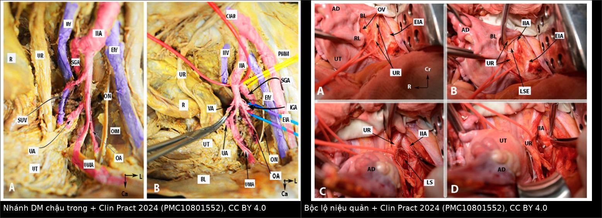
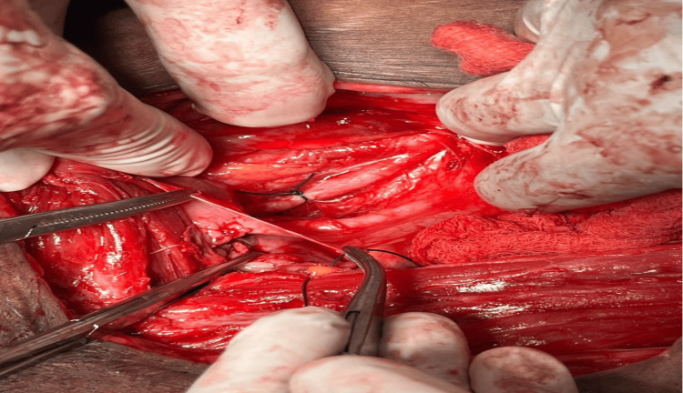
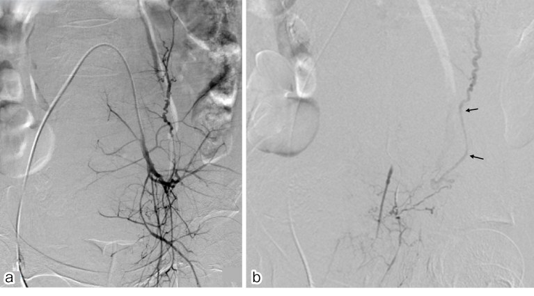

1927 — Thắt động mạch tử cung (O'Leary) và thắt động mạch chậu trong khi băng huyết sau sinh không cầm / Uterine artery ligation (O'Leary) and internal iliac artery ligation for refractory postpartum hemorrhage
Tags: pattern:chay-mau pattern:thoat-mach pattern:gia-phinh pattern:mat-mau-o-at vung:tu-cung-phan-phu vung:chau protocol:CTA-bung protocol:DSA protocol:that-dong-mach score:4T score:shock-index
Mức chắc chắn (certainty): tổng hợp y văn (literature synthesis) — ghép 1 bài giải phẫu–kỹ thuật 8 hình tiêu bản về thắt động mạch chậu trong (Clin Pract 2024, PMC10801552), 1 ca nguyên văn có 4 ảnh mổ (Cureus 2026, PMC11534795), 1 tổng quan can thiệp nội mạch theo nguyên nhân chảy máu (2026, PMC12504023), 1 nghiên cứu so sánh thắt ĐM tử cung vs thắt ĐM chậu trong về sinh sản (2024, PMC11576652), 1 tổng quan hệ thống–phân tích gộp 13 nghiên cứu/939 bệnh nhân về thắt ĐM chậu trong trong nhau cài răng lược (2026, PMC12858212) và 1 thử nghiệm ngẫu nhiên so sánh thắt ĐM tử cung hai bên vs mũi B-Lynch (2025, PMC12296886). Không có thử nghiệm ngẫu nhiên nào về thắt mạch trong băng huyết sau sinh (PPH) — mọi tỷ lệ thành công dưới đây là dữ liệu quan sát, có nguy cơ chọn lựa bệnh nhân, và cần đọc kèm mục (5).
1. Tổng quan bệnh học – cơ chế hình ảnh
- Vì sao phải thắt mạch khi băng huyết sau sinh (postpartum hemorrhage, PPH): máu đến tử cung từ 3 tầng: (1) động mạch tử cung (uterine artery) — nhánh của thân trước động mạch chậu trong (internal iliac artery, IIA); (2) động mạch buồng trứng (ovarian artery) — nhánh trực tiếp của động mạch chủ bụng, đi vòng ngoài bó mạch tử cung; (3) các nhánh động mạch âm đạo/cổ tử cung, động mạch trực tràng giữa, động mạch dây chằng tròn (artery of round ligament — Sampson). Cắt một nhánh không làm ngừng chảy — đó là lý do lâm sàng của cả bài.
- TẠI SAO thắt mạch cầm máu (vật lý dòng chảy): theo Poiseuille, lưu lượng $Q \propto \Delta P \cdot r^4/(8\eta L)$. Thắt không đưa $Q$ về 0 vì có vòng nối (collateral); điều thắt làm được là hạ áp lực: sau thắt hai bên IIA, áp lực mạch đập (pulse pressure) phía dưới chỗ thắt giảm ~85% và áp lực trung bình giảm ~25%, biến hệ động mạch chậu thành hệ áp lực thấp kiểu tĩnh mạch — cục máu đông hình thành không bị đẩy bật (PMC10801552). Vì vậy thắt mạch chỉ hiệu quả khi đã có đông máu; fibrinogen thấp thì thắt xong vẫn chảy (bài 1932).
- Động mạch tử cung (O'Leary): thắt hai lần bó mạch tử cung trong dây chằng rộng — mũi 1 khoảng 2 cm trên đoạn dưới tử cung, mũi 2 khoảng 2 cm dưới — nhằm bắt cả nhánh đi lên và nhánh đi xuống; tiêm vasopressin hoặc ấn động mạch chủ trước khi thắt giúp nhìn rõ. Tỷ lệ thành công được báo cáo > 90% (PMC11576652).
- Thắt ĐM chậu trong: thắt thân trước (anterior division) ở ~3 cm dưới chỗ chia đôi ĐM chậu chung, giữ lại thân sau/động mạch mông trên (superior gluteal artery) để tránh hoại tử cơ mông; không cần và không nên bộc lộ thân sau vì dễ làm rách tĩnh mạch chậu trong nằm ngay dưới–trong động mạch (PMC10801552).
- Mốc giải phẫu định lượng bắt buộc nhớ (PMC10801552):
- Chỗ chia đôi ĐM chậu chung ở đĩa gian đốt L5–S1 (82% tiêu bản), ngang L5 (15%); chiều dài IIA ~4 cm, bên phải thường dài hơn bên trái.
- Định luật Luschka: niệu quản trái bắt chéo ĐM chậu chung ~1,5 cm DƯỚI chỗ chia đôi, còn niệu quản phải bắt chéo ~1,5 cm TRÊN chỗ chia đôi (tức bắt chéo ĐM chậu ngoài). Đây là lý do bên phải nguy hiểm hơn khi bóc tách mù.
- Cấu trúc "kiềng ba chân" (tripod): niệu quản phía trong, ĐM chậu ngoài phía ngoài, IIA ở giữa — nhìn đủ ba thành phần mới được đặt chỉ.
- Tần suất và kết cục (để quyết định, không để hứa hẹn):
- Băng huyết sau sinh cần truyền máu khối lượng lớn (≥ 8 đơn vị hồng cầu trong 24 giờ) gặp 65/100.000 ca sinh; lượng máu mất trung vị 6.000 mL, cắt tử cung chu sinh 30%, tử vong 2,3% (Acta Obstet Gynecol Scand 2019, PMID 30667050 — dân số Hà Lan 2011–2012).
- Trong băng huyết nặng đã thất bại nội khoa, thắt mạch hoặc nút mạch là bước giữa mô khâu chèn/bóng chèn và cắt tử cung; can thiệp nội mạch (IR) đạt thành công kỹ thuật và lâm sàng > 90% (PMC12504023).
- Vì sao phải chụp hình trước khi thắt/nút:
- Máu tụ cấp trên CT ~ 40–60 HU, thoát mạch hoạt động (contrast extravasation) ≥ 100 HU vì chứa iod (Z = 53); chụp không cản quang không phân biệt được hai thứ này → mọi ca nghi còn chảy phải CTA có cản quang (bài 1728).
- Động mạch buồng trứng chỉ thấy được trên chụp ĐM chủ ở ~20% bệnh nhân; CE-CT xác định được nguyên ủy và đường đi để không bỏ sót nguồn chảy ngoài khung chậu (PMC12504023). Bỏ sót nhánh buồng trứng là lý do thất bại/thất bại lại điển hình sau nút ĐM tử cung.
2. Mẫu hình + chẩn đoán phân biệt theo vị trí (Gamut)
Câu hỏi định vị đổi từ "chảy từ đâu" sang "mạch nào đang nuôi chỗ chảy" — vì chọn thắt tử cung hay thắt chậu trong là quyết định theo bản đồ mạch, không theo triệu chứng.
Gamut theo mạch nuôi (nhìn trên CTA/DSA):
- ĐM tử cung (nhánh thân trước IIA): đờ tử cung, nhau cài răng lược (PAS), chảy từ diện nhau/mổ lấy thai đoạn dưới; DSA thấy phì đại, xoắn, thoát mạch thì động mạch.
- ĐM buồng trứng (từ ĐM chủ): chảy đỉnh/thân tử cung, đặc biệt sau khi đã nút ĐM tử cung trước đó (tuần hoàn bàng hệ phì đại); CE-CT thấy ĐM buồng trứng to, nguyên ủy lạc chỗ từ ĐM thận phụ (PMC12504023).
- ĐM dây chằng tròn (Sampson): nhánh của ĐM thượng vị dưới; nuôi sừng tử cung và thành bụng trước; thường bị bỏ sót khi nút "theo giải phẫu kinh điển".
- Nhánh âm đạo/cổ tử cung: rách cổ tử cung, đờ cổ tử cung, máu tụ dưới ổ nhớp (supra-levator) lan vào dây chằng rộng; DSA có thể co thắt không thấy thoát mạch.
- ĐM trực tràng giữa/ĐM thẹn trong: chảy sau cắt tử cung hoặc từ thành chậu; thường sau mổ hoặc xạ trị.
- Giả phình (pseudoaneurysm) ĐM tử cung/cổ tử cung: ổ tăng quang giữ hình thì muộn, Doppler "yin–yang" + to-and-fro; vỡ giả phình là nguyên nhân chảy máu muộn (bài 1723).
Gamut theo vị trí tổn thương:
- Thân tử cung, đờ tử cung hoặc PAS: ĐM tử cung ± buồng trứng.
- Đoạn dưới/sẹo mổ lấy thai: ĐM tử cung nhánh xuống ± nhánh âm đạo.
- Cổ tử cung/rách cùng đồ: nhánh cổ tử cung của ĐM tử cung, ĐM âm đạo.
- Thành chậu/sau cắt tử cung: ĐM chậu trong (thân trước) → thắt hoặc nút thân trước.
- Sàn chậu/âm hộ: ĐM thẹn trong, ĐM mông dưới.
3. Bảng so sánh phân biệt (ma trận đối chiếu)
| Thực thể (entity) | Hình ảnh / dữ liệu điển hình | Chốt vào (rule-in) | Chốt loại (rule-out) | Gợi ý xác nhận |
|---|---|---|---|---|
| Thắt ĐM tử cung hai bên (O'Leary) | Không cần hình ảnh để làm; DSA trước cho thấy ĐM tử cung phì đại/xoắn, thoát mạch thì động mạch | Đờ tử cung/PAS, nguồn chảy trong khung tử cung, tử cung còn sống, đã thất bại thuốc + bóng chèn | Máu tụ lan ra dây chằng rộng/thành chậu hoặc nguồn từ ĐM buồng trứng → thắt tử cung đơn thuần thất bại | Thành công > 90%; mũi trên/dưới cách đoạn dưới ~2 cm; BUAL vs mũi B-Lynch: máu mất và thời gian nằm viện tương đương (PMC12296886) |
| Thắt ĐM chậu trong hai bên (IIAL) | Mốc: chỗ chia đôi L5–S1, thắt ~3 cm dưới chia đôi, thân trước, chừa ĐM mông trên | Chảy từ thành chậu/sau cắt tử cung, hoặc đờ tử cung không đáp ứng thắt tử cung, cần hạ áp lực toàn khung chậu | Mong đợi "cắt hết máu" → sai: vẫn còn tuần hoàn bàng hệ; IIAL đơn thuần trong PAS không giảm lượng máu mất (MD −177 mL, P = 0,51, I² = 95%) | Áp lực mạch đập giảm ~85%, áp lực trung bình ~25%; biến chứng 4,1% vs nút mạch 16,7% |
| Nút mạch (UAE/IR) | DSA: thoát mạch, giả phình, co thắt ĐM tử cung; CE-CT định vị ĐM buồng trứng | Bệnh nhân còn ổn định, không chảy ồ ạt vào ổ bụng, cơ sở có IR | Huyết động không ổn + máu ổ bụng nhiều → mổ, không chờ IR | Thành công > 90%; nút thân trước IIA khi không chọn được nhánh; co thắt = cạm bẫy (mục 5) |
| Mô khâu chèn (B-Lynch, Hayman, Cho) | Không có dấu hiệu hình ảnh đặc hiệu; dùng khi tử cung còn nguyên khối | Đờ tử cung, buồng tử cung kín, không có khuyết thành | Có khuyết thành/vỡ → không dùng (bài 1728) | B-Lynch 79,1%; + thắt ĐM tử cung > 90% (dẫn trong bài 1728) |
| Bóng chèn trong tử cung | Bóng căng trong buồng, không thoát ra ngoài | Đờ tử cung, buồng kín | Bóng thoát ra ổ bụng/âm đạo = còn khuyết thành → sai chỉ định | Bakri 66,7–80%; thể tích bơm trung vị 150 mL (bài 1728) |
| Cắt tử cung (hysterectomy) | Tử cung hoại tử, vỡ không khâu được, PAS xâm lấn bàng quang | Đã thất bại 2 bước cầm máu, hoặc tử cung không còn khả năng bảo tồn | Còn khả năng bảo tồn + bệnh nhân ổn → chưa cắt | Cắt tử cung chu sinh 30% ở nhóm cần truyền máu khối lượng lớn (PMID 30667050) |

Trái: các nhánh IIA — UA = động mạch tử cung, UR = niệu quản, SGA = động mạch mông trên, EIA/EIV = ĐM/TM chậu ngoài. Phải: (A) mở phúc mạc, xác định niệu quản (UR); (B) thấy "kiềng ba chân" IIA–EIA–UR; (C) bộc lộ thân trước; (D) đặt chỉ. Nguồn: Clin Pract 2024 (PMC10801552), CC BY 4.0. Ảnh ghép letterbox, không crop/kéo giãn.Ba dấu hiệu quyết định trên bàn mổ / trên màn hình
- Nhìn thấy niệu quản trước khi đặt chỉ — đặt sling quanh niệu quản; nhớ niệu quản trái bắt chéo 1,5 cm dưới, phải 1,5 cm trên chỗ chia đôi.
- Chỉ luồn dưới thân trước, ~3 cm dưới chỗ chia đôi — đường đi từ ngoài vào trong; không bộc lộ thân sau.
- Xác nhận mạch đập phía dưới giảm sau khi thắt — nếu còn phập mạnh, khả năng cao đã thắt nhầm thân sau hoặc chỉ mới thắt một bên.
4. Protocol chụp + hệ phân độ/điểm chuẩn hóa
4.1. Chọn hình ảnh theo tình huống
| Tình huống | Ưu tiên | Lý do / ngưỡng |
|---|---|---|
| Huyết động không ổn, nghi chảy vào ổ bụng | Siêu âm tại giường (FAST) → mổ ngay | CT làm chậm cầm máu; không chờ hình ảnh |
| Huyết động ổn, chưa rõ nguồn | CTA bụng–chậu có cản quang (thì động mạch + tĩnh mạch) | Thoát mạch ≥ 100 HU; máu tụ 40–60 HU; xác định ĐM buồng trứng/Sampson trước khi nút |
| Đã nút ĐM tử cung thất bại/lái chảy | CE-CT rồi DSA | ĐM buồng trứng chỉ thấy trên chụp ĐM chủ ở ~20%; CE-CT chỉ đường |
| Sau mổ, Hb giảm tiếp | CTA | Máu tụ, hoại tử, giả phình, thoát mạch còn |
4.2. Thang bậc can thiệp (step-up) — thứ tự không được đảo
- Thuốc: oxytocin, misoprostol, methylergometrine + tranexamic acid 1 g IV (bài 1932).
- Cơ học: ấn tử cung, bóng chèn, mô khâu chèn.
- Thắt ĐM tử cung hai bên (O'Leary) — đơn giản, nhanh, thành công > 90%.
- Thắt ĐM chậu trong hai bên — khi nguồn ngoài tử cung hoặc thắt tử cung thất bại.
- Nút mạch (IR) — nếu bệnh nhân ổn định và có cơ sở IR; có thể làm trước mổ ở ca PAS có kế hoạch.
- Cắt tử cung — bước cuối, không trì hoãn sau khi đã thất bại hai bước.
flowchart TD
A[Băng huyết sau sinh không cầm] --> B{Đã dùng thuốc + bóng chèn?}
B -->|Chưa| C[Xử lý theo 4T: tone/trauma/tissue/thrombin]
C --> B
B -->|Rồi, còn chảy| D{Máu ổ bụng nhiều hoặc huyết động không ổn?}
D -->|Có| E[Mổ ngay]
D -->|Không| F[CTA: tìm mạch nuôi và thoát mạch]
F --> G{Nguồn trong khung tử cung?}
G -->|Có| H[Thắt ĐM tử cung hai bên O'Leary]
G -->|Không, thành chậu| I[Thắt thân trước ĐM chậu trong hoặc nút mạch]
E --> H
H --> J{Còn chảy?}
J -->|Không| K[Theo dõi: SI, Hb, fibrinogen, lactate, nước tiểu]
J -->|Có| I
I --> L{Còn chảy?}
L -->|Không| K
L -->|Có| M[Cắt tử cung]
4.3. Kỹ thuật thắt ĐM chậu trong — 8 bước (PMC10801552)
- Xác định chỗ chia đôi ĐM chậu chung (ngang L5–S1, đường nối hai gai chậu trước trên).
- Mở phúc mạc thành từ dây chằng tròn lên tới ĐM chậu chung; đường mổ giữa bó mạch buồng trứng và cơ thắt lưng lớn.
- Xác định và treo niệu quản (sling/vessel loop) — bước bắt buộc.
- Bóc tổ chức liên kết, thấy "kiềng ba chân": niệu quản trong, ĐM chậu ngoài ngoài, IIA giữa.
- Mở khoang cạnh trực tràng bên (Latzko) để đẩy niệu quản vào trong và tạo khoảng trống.
- Tách ĐM khỏi tĩnh mạch chậu trong (tĩnh mạch nằm dưới và hơi trong) — đây là bước nguy hiểm nhất.
- Luồn chỉ dưới thân trước ~3 cm dưới chỗ chia đôi, từ ngoài vào trong.
- Thắt (không cắt); kiểm tra mạch đập phía dưới; đóng theo lớp.
4.4. Điểm chuẩn hóa dùng trong quyết định
- 4T: Tone (đờ tử cung) — Trauma (rách/vỡ) — Tissue (sót nhau/PAS) — Thrombin (rối loạn đông máu). Thắt mạch chỉ xử lý T ở nhóm tone/trauma; thrombin phải sửa bằng fibrinogen/yếu tố (bài 1932).
- Shock index (SI = nhịp tim/huyết áp tâm thu): SI > 0,8 là ngưỡng vào phác đồ; SI > 1,7 là ngưỡng kích hoạt truyền máu khối lượng lớn trong lưu đồ PPH (PMC13399376); SI ≥ 1,4 = sốc nặng.
- Ngưỡng huyết động học khi nút mạch: fibrinogen < 2 g/L và pH < 7,2 làm tăng thất bại; fibrinogen < 40 mg/dL đã được báo cáo ở ca còn chảy dù ĐM co thắt (PMC12504023).
5. Biến thể bình thường và cạm bẫy
- "Thắt ĐM chậu trong = ngừng toàn bộ máu đến chậu" — SAI. Áp lực mạch đập chỉ giảm ~85%, áp lực trung bình ~25%; máu vẫn đến qua ĐM mông trên, ĐM cùng giữa, ĐM trực tràng trên, ĐM thượng vị dưới, ĐM buồng trứng. Thắt mạch tạo điều kiện cho cục đông, không thay thế đông máu.
- Thắt nhầm thân sau (hoặc thắt cả IIA): nguy cơ hoại tử cơ mông, đau cách hồi mông, liệt dương, hoại tử bàng quang/trực tràng; đã báo cáo hoại tử mông 1/54 ca (PMC10801552). Chỉ thắt thân trước, chừa ĐM mông trên.
- Bỏ sót ĐM buồng trứng: sau nút/thắt ĐM tử cung, ĐM buồng trứng phì đại và là nguồn chảy chính; chỉ 20% thấy trên chụp ĐM chủ → phải CE-CT hoặc chụp chọn lọc (PMC12504023).
- "Co thắt ĐM tử cung = đã cầm máu" — SAI. Ở bệnh nhân sốc/DIC, ĐM tử cung co thắt, không thoát mạch trên DSA nhưng vẫn chảy (ca SI 1,7, fibrinogen < 40 mg/dL); phải đẩy microcatheter ra ngoại vi và nút cả nhánh âm đạo, nếu không sẽ tái thông và chảy lại (PMC12504023).
- Kỳ vọng quá mức vào IIAL trong PAS: phân tích gộp 13 nghiên cứu/939 bệnh nhân cho thấy thắt IIA trong PAS không giảm lượng máu mất (MD −177,10 mL; KTC 95% −701,46 đến 347,27; P = 0,51; I² = 95%), không giảm số đơn vị truyền (MD −0,06 đơn vị; P = 0,95), không giảm thời gian mổ, tổn thương bàng quang hay thời gian nằm viện (PMC12858212). Nghĩa là: IIAL không được dùng để thay thế kỹ thuật kiểm soát tại chỗ trong PAS.
- Số liệu nhỏ, đừng đọc như chân lý: "BUAL > 90%" và "B-Lynch 79,1%" đến từ các nghiên cứu quan sát/1 trung tâm; một thử nghiệm ngẫu nhiên 86 ca (43 vs 43) thấy BUAL và B-Lynch tương đương về máu mất và thời gian nằm viện (PMC12296886). Sai lệch chủ yếu do chọn bệnh nhân.
- Tư vấn sinh sản phải phân biệt hai kỹ thuật: sau BUAL, sinh non 12,8%; sau thắt ĐM chậu trong, sinh non 32,2% (so với 6% nhóm chứng; P = 0,001); sảy thai, vô sinh, tiền sản giật, sinh mổ không khác biệt (PMC11576652). Đây là lý do ưu tiên thắt ĐM tử cung trước khi bệnh cảnh cho phép.
6. Tự lượng giá — Blind Quiz
Ca 1 — Sản phụ đờ tử cung sau mổ lấy thai; đã dùng oxytocin 20 IU, misoprostol 800 µg, methergine 0,25 mg và mũi B-Lynch, tử cung vẫn mềm và còn chảy.

- Câu hỏi: Cấu trúc đang được đặt chỉ là gì? Vì sao phải bộc lộ niệu quản trước? Bước tiếp theo nếu vẫn chảy?
Bấm để hiện đáp án (findings + chẩn đoán)
- Findings: kẹp phẫu tích luồn dưới thân trước động mạch chậu trong bên phải, ngay dưới chỗ chia đôi ĐM chậu chung; niệu quản đã được xác định và đẩy vào trong.
- Lưu ý kỹ thuật (đối chiếu nguồn): bài ca này mô tả chỉ đặt ~1 cm dưới chỗ chia đôi, còn hướng dẫn giải phẫu của Kostov khuyến cáo ~3 cm để chắc chắn đã qua nguyên ủy động mạch mông trên — hai con số khác nhau, phụ thuộc nơi thân sau tách ra; nguyên tắc chung là phải nhìn thấy thân trước tách khỏi thân sau rồi mới đặt chỉ.
- Chẩn đoán: đờ tử cung kháng trị → thắt thân trước ĐM chậu trong hai bên sau khi thắt ĐM tử cung (O'Leary) thất bại.
- Vì sao chừa thân sau: giữ ĐM mông trên để tránh hoại tử cơ mông; chỉ thắt thân trước ở ~3 cm dưới chỗ chia đôi.
- Nếu vẫn chảy: kiểm tra fibrinogen (bài 1932), tìm nhánh buồng trứng/âm đạo còn sót, rồi cắt tử cung — không chờ thêm.
- Nguồn ảnh: Cureus 2026 (PMC11534795), CC BY 4.0.
Ca 2 — Cùng bệnh cảnh: nhìn bản đồ mạch trước khi quyết định thắt.
- Câu hỏi: Kể tên 3 nhánh của thân trước IIA có thể là nguồn chảy. Mốc nào để không thắt nhầm thân sau? Vì sao bên phải khó hơn bên trái?
Bấm để hiện đáp án (findings + chẩn đoán)
- Findings: trên tiêu bản, UA (động mạch tử cung) là nhánh lớn đi vào dây chằng rộng; UR (niệu quản) bắt chéo phía trước; SGA (động mạch mông trên) là nhánh của thân sau — phải giữ lại.
- Ba nhánh thân trước thường là nguồn chảy: động mạch tử cung, động mạch âm đạo/cổ tử cung, động mạch trực tràng giữa (thêm ĐM thẹn trong, ĐM mông dưới).
- Mốc an toàn: thắt ~3 cm dưới chỗ chia đôi, thấy "kiềng ba chân" niệu quản–ĐM chậu ngoài–IIA; không bộc lộ thân sau.
- Bên phải khó hơn: theo định luật Luschka, niệu quản phải bắt chéo 1,5 cm TRÊN chỗ chia đôi (tức nằm ngay vùng bóc tách), còn niệu quản trái bắt chéo 1,5 cm DƯỚI.
- Nguồn ảnh: Clin Pract 2024 (PMC10801552), CC BY 4.0; ảnh ghép letterbox.
Ca 3 — Băng huyết sau sinh, DSA ĐM chậu trong trái: ĐM tử cung teo nhỏ, không thấy thoát mạch; bệnh nhân vẫn đang chảy, SI 1,7, fibrinogen < 40 mg/dL.

- Câu hỏi: Vì sao không thấy thoát mạch mà vẫn chảy? Xử lý nội mạch đúng là gì? Nguy cơ nếu chỉ nút "theo giải phẫu"?
Bấm để hiện đáp án (findings + chẩn đoán)
- Findings: (a) chụp ĐM chậu trong trái — ĐM tử cung co thắt (mũi tên), không có thoát mạch ở thì đầu; (b) sau khi nút thân trước IIA, lộ ra thoát mạch từ nhánh âm đạo (mũi tên).
- Vì sao: co thắt mạch do sốc/giảm thể tích và DIC (fibrinogen < 40 mg/dL) che mất chỗ rách; mạch co làm dòng chảy chậm, không đủ để thuốc cản quang thoát ra.
- Xử lý đúng: đẩy microcatheter ra ngoại vi trước khi bơm vật liệu, nút cả nhánh âm đạo, và sửa đông máu song song; nếu không, mạch tái thông sau khi hết co thắt → chảy lại.
- Nguy cơ: nút "theo giải phẫu" chỉ ở ĐM tử cung → bỏ sót nhánh âm đạo/ĐM buồng trứng → thất bại, phải mổ lại.
- Nguồn ảnh: J Clin Med 2026 (PMC12504023), CC BY-NC 4.0.
Bài liên quan chéo
- 1728 – Chảy máu sau vỡ tử cung: khâu bảo tồn, bóng chèn, UAE, cắt tử cung
- 1932 – Truyền máu khối lượng lớn và rối loạn đông máu trong băng huyết sau sinh
- 1717 – Vỡ tử cung trên sẹo mổ lấy thai
- 1723 – Giả phình động mạch tử cung: yin–yang, to-and-fro, nút mạch
- 1657 – Dị dạng động–tĩnh mạch tử cung & tăng sinh mạch cơ tử cung
- 1816 – REBOA: chọn bóng, chiều dài chèn, ngưỡng thời gian
- 920 – Nút mạch cầm máu đường tiêu hóa
Ảnh
images/composite_giai-phau-that-dm-chau.jpg— ghép tiêu bản nhánh IIA + các bước bộc lộ (PMC10801552), CC BY 4.0.images/1927_giai-phau-dm-chau_GP_PMC10801552-F1.jpg— tiêu bản nhánh IIA (PMC10801552), CC BY 4.0.images/1927_cac-buoc-that_GP_PMC10801552-F4.jpg— các bước bộc lộ niệu quản/IIA (PMC10801552), CC BY 4.0.images/1927_that-dm-chau-trong_MO_PMC11534795-F3.jpg— mổ: đặt chỉ thân trước IIA phải (PMC11534795), CC BY 4.0.images/1927_dsa-co-that_DSA_PMC12504023-F5.jpg— DSA: ĐM tử cung co thắt và thoát mạch từ nhánh âm đạo (PMC12504023), CC BY-NC 4.0.- Nguồn, giấy phép và ghi chú phái sinh từng ảnh:
images/CREDITS.md.
Không dùng để chẩn đoán độc lập khi chưa có người hướng dẫn.